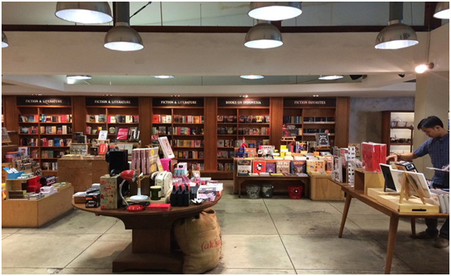
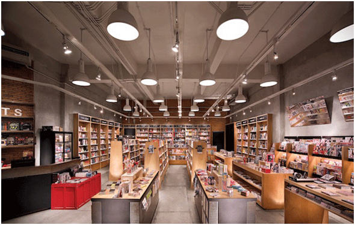
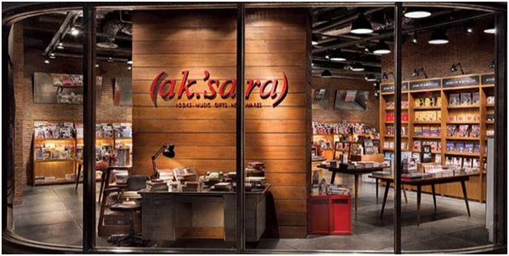

Aksara Book Store adalah sebuah toko buku yang berada di daerah Ibu Kota Jakarta. Pemilik dari toko buku Aksara ini adalah dari dua orang pemilik yaitu Ibu Arini Subianto dan Pak Winfred Hutabarat.
Aksara tidak hanya menjual buku saja, didalamnya juga menjual gift, music dan homewares. Barang – barang unik, menjadi ciri dari toko buku Aksara ini. Pada awal nya toko buku aksara ini memiliki 3 cabang dan 1 toko pusat. 3 cabang tersebut tersebar di beberapa tempat, yaitu Aksara Plaza Indonesia, Aksara Pacific Place, dan Aksara Cilandak Town Square ( CITOS ). Pusat dari toko buku Aksara ini berada di kemang bersebelahan langsung dengan office Aksara. Namun pada tahun 2014 Aksara Plaza Indonesia telah tutup dan sekarang hanyaa ada 3 buah toko buku saja.
Toko Buku Aksara menyediakan buku-buku bacaan serius dan benda-benda unik. Buku-buku bacaan di toko ini didominasi oleh bacaan serius dalam bidang ekonomi, manajemen, politik, sejarah, spiritualisme, biografi, sejarah, dan sastra. Yang menjadi andalan toko ini lantaran koleksi buku sastra yang banyak, menempati satu rak yang panjang, dimulai dari sastra klasik (Shakespeare, Melville, Hugo, D.H. Lawrence, Tolstoy) hingga kontemporer (Coelho, Marquez, Kafka, Kundera). Selain subyek tersebut, Aksara juga mengambil kekhususan dalam bidang desain dan arsitektur, seperti yang terlihat dari banyaknya koleksi buku bagai para professional di bidang desain. Untuk kategori bacaan ringan, pengujung mendapatkan pilihan seperti buku-buku anak, majalah luar negeri, buku gift & novelty.
Yang membuat tempat ini unik adalah koleksi non-buku yang dijualnya seperti kamera Lomo, piringan hitam, musik (CD), DVD, dan T-Shirt. Keistimewaan inilah yang mebuat Aksara memiliki jati diri yang khas. Untuk musik, Aksara mengambil posisi dalam bidang musik Indie dan musik elektronik, sedangkan koleksi DVD-nya adalah film-film impor yang non-komersil. T- Shirt yang dijual di tempat ini juga termasuk pilihan unik kebanyakan tentang band-band legendaris, yang tentunya langsung dari official marchendise langsung dari band tersebut. Hampir 80% lebih barang yang berada di aksara adalah impor. Dan design toko buku Aksara yang sangat unik dan nyaman menjadi salah satu daya tarik dari toko buku ini dari pengunjung.
Aksara Kemang yang beralamatkan di Jl. Kemang Raya no 8B, Jakarta Selatan. Toko buku ini berdiri pada tahun 2001. Toko buku aksara yang pertama ini bersebelahan dengan office dari toko buku aksara itu sendiri. Aksara kemag dengan design yang terkesan homewares namun sangat nyaman.

Aksara CITOS atau Cilandak Townsquare yang beralamatkan di Cilandak Town Square 2nd FL, Jl. Letjend. TB Simatupang Kav. 17. Aksara CITOS adalah toko buku aksara kedua yang hadir yaitu pada tahun 2003.

Aksara Plaza Indonesia toko buku ini beralamatkan di Plaza Indonesia LB Unit41-42A, Jl. MH. Thamrin No. 28-30. Toko buku ke tiga ini berdiri pada tahun 2004 dengan akhirnya tutup pada tahun 2014.

Aksara Pacific Place beralamatkan di Pacific Place Mall 4th floor unit 406A Jalan Jendral Sudirman 12190. Toko buku ini berdiri pada tahun 2009 hingga saat ini.